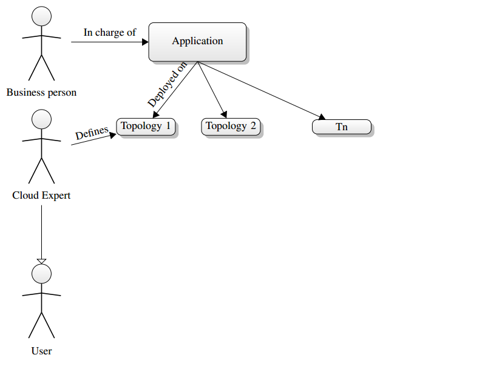
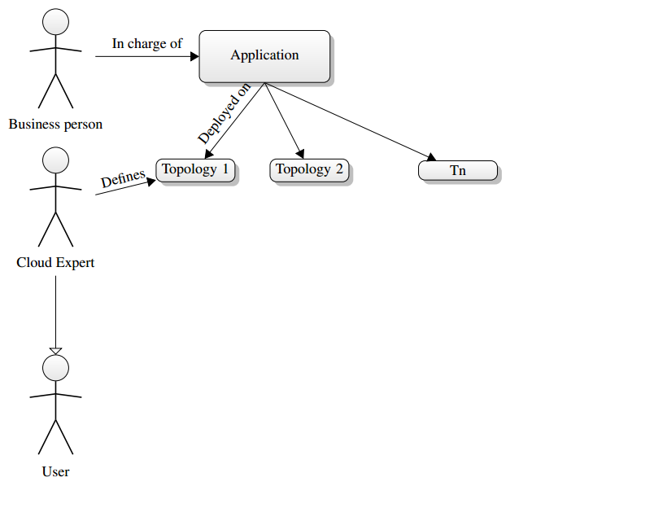
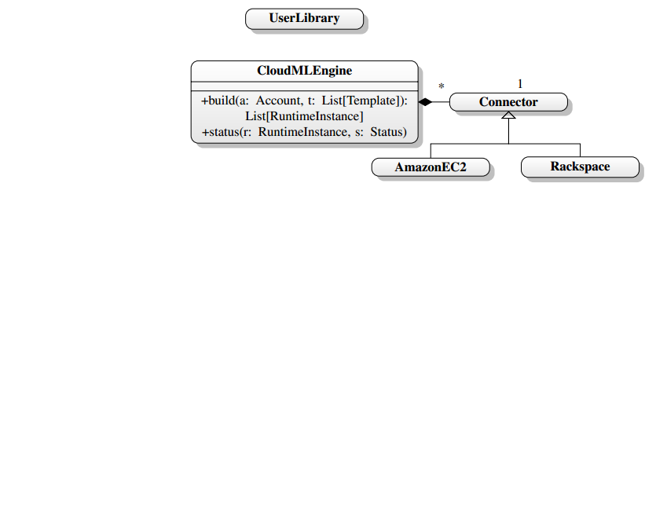
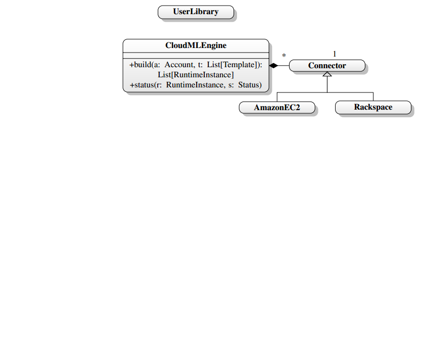

Loading...
Big picture
 



Meta-model
 



Technologies
-


-

 JSON
JSON
Actors example
def act() {
loop {
receive {
case SetStatus (s) =>
status = s
listeners.foreach(_(Event.Status))
}
}
}
}
runtimeInstance ! SetStatus(Status.Building)
runtimeInstance.addListener( (event) =>
event match {
case Event.Status =>
println("Stauts set to %s".format(runtimeInstance.status))
}
)

 JSON
JSON{
"name": "MyTemplate",
"nodes": [{
"name": "AppNode",
"minCores": 2,
"locationId": "us-east-1a"
}, {
"name": "DatabaseNode",
"minRam": 4000
"locationId": "ap-southeast-1a",
}]
}